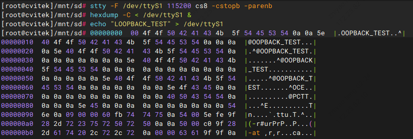
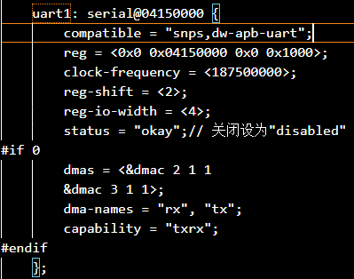

8. UART 操作指南¶
本文档说明在 CV184x 平台上配置与使用 UART（串口）、环回测试、常用波特率设置以及用户态程序开发的基本流程。
8.1. 操作准备¶
8.1.1. 内核要求¶
使用官方发布的 SDK 编译后的内核镜像。
8.1.2. 设备树中使能 UART¶
在设备树中将目标 UART 节点的 status 设为 "okay" 。UART 节点定义位于 SDK 的
build/boards/default/dts/cv184x/cv184x_base.dtsi 中。以 UART1 为例：
uart1: serial@04150000 {
compatible = "snps,dw-apb-uart";
reg = <0x0 0x04150000 0x0 0x1000>;
clock-frequency = <25000000>;
reg-shift = <2>;
reg-io-width = <4>;
status = "okay"; /* 关闭则设为 "disabled" */
};
修改后需重新编译设备树并烧录到设备。
8.1.3. UART 使用 DMA 时的设备树配置¶
若需使能 UART DMA，需同时修改板级 DTS 与 cv184x_base.dtsi：
板级 DTS 路径：build/boards/cv184x/板名/dts_arm/板名.dts（板名替换为实际板卡名）。
在板级 DTS 的
sysdma_remap中为 UART 分配 DMA 通道，并在对应 UART 节点中增加dmas、dma-names等属性。
cv184x_base.dtsi 中 UART1 的 DMA 示例（与 sysdma_remap 配合）：
sysdma_remap {
ch-remap = <CVI_I2S0_RX CVI_I2S2_TX CVI_UART1_RX CVI_UART1_TX
CVI_SPI_NOR_RX CVI_SPI_NOR_TX CVI_I2S2_RX CVI_I2S3_TX>;
};
uart1: serial@04150000 {
compatible = "snps,dw-apb-uart";
reg = <0x0 0x04150000 0x0 0x1000>;
clock-frequency = <25000000>;
reg-shift = <2>;
reg-io-width = <4>;
status = "okay";
dmas = <&dmac 2 1 1>, <&dmac 3 1 1>;
dma-names = "rx", "tx";
capability = "txrx";
};
dmas 中的通道号需与 sysdma_remap 中的分配一致，例如 CVI_UART1_RX 对应 dmac 通道 2，CVI_UART1_TX 对应 dmac 通道 3。修改后重新编译设备树并烧录。
8.1.4. 引脚复用¶
通过 cvi_pimux 工具或设备树将所用 GPIO 引脚配置为 UART 功能（TX、RX、CTS、RTS 等），具体引脚以板级原理图为准。
8.2. 操作流程¶
8.2.1. UART 环回测试¶
用于验证串口收发与引脚是否正常：将 UART 的 TX 与 RX 短接，发送数据后应能从同一串口读回相同内容。
短接 UART1 的 TX 与 RX 引脚。
在终端执行环回测试命令（以 ttyS1 为例）：
stty -F /dev/ttyS1 115200 cs8 -cstopb -parenb
hexdump -C < /dev/ttyS1 &
echo "LOOPBACK_TEST" > /dev/ttyS1
{kind=link}

若短接正常，hexdump 应能打印出与 echo 一致的内容。
8.2.2. UART 串口通信（终端收发）¶
设置波特率与帧格式（以 ttyS1、115200 8N1 为例）：
stty -F /dev/ttyS1 115200 cs8 -cstopb -parenb
发送数据：
echo "Hello UART" > /dev/ttyS1
接收数据（需在另一终端或另一台机连接该串口）：
cat /dev/ttyS1
查看当前串口配置：
stty -F /dev/ttyS1 -a
8.3. UART 扩展操作（常用 / 排障 / 高级）¶
除上述基础收发、环回测试与查看配置外，以下按 常用扩展操作 → 排障类操作 → 高级配置操作 的顺序补充串口调试、参数固化、流控、数据捕获与排障等说明。示例中设备节点以 /dev/ttyS1 为例，请按实际串口替换。
8.3.1. 常用扩展操作（基础功能补充）¶
1. 串口流控配置（缓解大流量丢包）
若串口传输大文件或高频数据时出现丢包，可尝试开启硬件或软件流控。硬件流控需板级支持 RTS/CTS 引脚并正确连接。
# 开启硬件流控（RTS/CTS）
stty -F /dev/ttyS1 crtscts 115200 cs8
# 开启软件流控（XON/XOFF）
stty -F /dev/ttyS1 ixon ixoff 115200 cs8
# 关闭所有流控（默认）
stty -F /dev/ttyS1 -crtscts -ixon -ixoff
硬件流控可靠性更高，适合工业等对稳定性要求高的场景；软件流控无需额外引脚，适合简单场景。
2. 串口数据捕获与分析（调试用）
需要抓取串口收发的原始数据用于调试协议时，可采用以下方式。
用 cat + tee 保存接收数据
cat /dev/ttyS1 | tee /tmp/uart_recv.log # 实时查看并保存
3. 串口发送 / 接收二进制数据（非文本）
前文 echo 仅适合发送文本。传输二进制文件（如固件、数据包）时建议使用 cat/dd，避免换行或转义影响数据。
# 发送二进制文件到串口
cat /mnt/sd/data.bin > /dev/ttyS1
# 文件根据实际修改
# 从串口接收二进制数据并保存（按块读取）
dd if=/dev/ttyS1 of=/tmp/recv_bin.bin bs=1024 count=10 # 读取 10KB
8.3.2. 排障类操作（解决串口异常）¶
1. 检查串口硬件与占用状态
# 查看串口设备是否存在
ls -l /dev/ttyS*
# 查看串口驱动状态（占用、中断、错误计数等，嵌入式常用）
cat /proc/tty/driver/serial
# 检查串口是否被其他进程占用
lsof /dev/ttyS1 # 有输出则表示被占用，可结束对应进程
2. 清除串口缓存 / 重置串口
串口出现乱码、卡死时，可尝试清空缓冲或恢复默认配置。
# 清空串口输入/输出缓冲
stty -F /dev/ttyS1 flush 0 # 清空输入缓存
stty -F /dev/ttyS1 flush 1 # 清空输出缓存
# 将串口恢复为合理默认配置
stty -F /dev/ttyS1 sane
8.3.3. 高级配置操作（适配特殊场景）¶
1. 配置串口奇偶校验
前文示例为无校验（-parenb）。若外设要求奇偶校验，可按需设置。
# 偶校验（even parity）
stty -F /dev/ttyS1 115200 cs8 -cstopb parenb -parodd
# 奇校验（odd parity）
stty -F /dev/ttyS1 115200 cs8 -cstopb parenb parodd
# 无校验（默认，与前文一致）
stty -F /dev/ttyS1 115200 cs8 -cstopb -parenb
2. 调整串口输入 / 输出与回显（缓解粘包等）
# 设置输出延迟等（单位 0.01 秒量级），可减少小包发送时的粘包
stty -F /dev/ttyS1 ospeed 115200 ocrnl onlcr -ocrnl -onlcr delay 1
# 关闭输入回显（交互时避免本地回显重复）
stty -F /dev/ttyS1 -echo
8.3.4. UART 扩展操作小结¶
常用配置 ：永久保存串口参数（rc.local 或 systemd）、配置流控（减少丢包）、使用 cat/dd 传输二进制数据。
排障操作 ：检查串口设备与占用（ls、/proc/tty/driver/serial、lsof/fuser）、清空缓冲与重置（stty flush/sane）、循环收发验证稳定性。
高级调试 ：数据捕获（tee、screen、minicom）、奇偶校验、输出/回显与延迟、串口控制台绑定。
注意 ：串口参数（波特率、流控、校验、数据位/停止位）需与对端外设完全一致，否则易出现乱码或丢包；调试时优先使用 screen 或 minicom 等工具；二进制数据传输避免使用 echo，使用 cat/dd 更可靠。
8.4. UART 特定波特率输出（以 3M 为例）¶
当需要 3M 等非标准波特率时，需修改内核中波特率表与 termbits，并保证设备树中 UART 时钟足够大，否则会出现乱码或无法工作。
步骤 1：修改内核波特率表与 termbits
修改 linux_5.10/drivers/tty/tty_baudrate.c
在
baud_table和baud_bits中增加 3000000（若需其他波特率，将 3000000 替换为目标值）。示例片段：
static const speed_t baud_table[] = {
0, 50, 75, 110, 134, 150, 200, 300, 600, 1200, 1800, 2400,
4800, 9600, 19200, 38400, 57600, 115200, 230400, 460800,
#ifdef __sparc__
76800, 153600, 307200, 614400, 921600, 500000, 576000,
1000000, 1152000, 1500000, 2000000
#else
500000, 576000, 921600, 1000000, 1152000, 1500000, 2000000,
3125000, 3000000, 6125000, 12500000
#endif
};
static const tcflag_t baud_bits[] = {
B0, B50, B75, B110, B134, B150, B200, B300, B600, B1200, B1800, B2400,
B4800, B9600, B19200, B38400, B57600, B115200, B230400, B460800,
#ifdef __sparc__
B76800, B153600, B307200, B614400, B921600, B500000, B576000,
B1000000, B1152000, B1500000, B2000000
#else
B500000, B576000, B921600, B1000000, B1152000, B1500000, B2000000,
B3125000, B3000000, B6125000, B12500000
#endif
};


修改 linux_5.10/include/uapi/asm-generic/termbits.h
将 3M 波特率注释打开，并注释掉 4000000 波特率（如需修改其他波特率则将 3000000 替换为其他数值）。
#define B3000000 0010015 // #define B4000000 0010015
注释掉重复的
B3000000定义（即数值为 0020001 的那一行），保留与 baud_table 一致的定义。// #define B3000000 0020001
修改后重新编译内核。
步骤 2：设备树中 UART 时钟
若环回测试通过但实际通信无输出或乱码，多为 UART 输入时钟（CLK）偏小。UART 时钟建议不小于 波特率 × 16 。在设备树中将该 UART 的 clock-frequency 调大（例如改为 187500000 即 187.5MHz），重新编译设备树并烧录。
{kind=link}

步骤 3：验证 3M 波特率是否正常
按本文「操作流程」中的 UART 环回测试 与 UART 串口通信（终端收发） 进行 UART 收发测试：先将目标 UART 的 TX 与 RX 短接做环回测试，或将两台设备通过串口相连做收发测试；在 stty 中设置波特率为 3000000（例如 stty -F /dev/ttyS1 3000000 cs8 -cstopb -parenb），发送并读回数据。若环回/对端接收内容与发送一致，则 3M 波特率工作正常。
8.5. 用户态程序开发示例¶
以下示例演示用户空间串口收发流程：打开串口、配置波特率与 8N1、执行读写测试。
示例内容：
uart_config：8N1、可配置波特率、原始模式、读超时 10 秒uart_write/uart_read：发送与接收main：循环收发
请按实际设备节点替换 /dev/ttyS1。若内核未支持 3M 波特率，请将 B3000000 改为 B115200 等（参见本文「UART 特定波特率输出（以 3M 为例）」小节）。
基本流程：打开设备、配置 termios、收发、关闭
1#include <fcntl.h>
2#include <termios.h>
3#include <unistd.h>
4#include <stdio.h>
5#include <string.h>
6#include <errno.h>
7
8/* 配置串口参数（8N1，波特率由参数指定） */
9int uart_config(int fd, speed_t baudrate) {
10 struct termios tty;
11 memset(&tty, 0, sizeof(tty));
12
13 if (tcgetattr(fd, &tty) != 0) {
14 printf("获取串口配置失败: %s\n", strerror(errno));
15 return -1;
16 }
17
18 cfsetispeed(&tty, baudrate);
19 cfsetospeed(&tty, baudrate);
20
21 tty.c_cflag &= ~PARENB;
22 tty.c_cflag &= ~PARODD;
23 tty.c_cflag &= ~CSTOPB;
24 tty.c_cflag &= ~CSIZE;
25 tty.c_cflag |= CS8;
26 tty.c_cflag &= ~CRTSCTS;
27 tty.c_cflag |= CREAD | CLOCAL;
28
29 tty.c_lflag &= ~ICANON;
30 tty.c_lflag &= ~ECHO;
31 tty.c_lflag &= ~ECHOE;
32 tty.c_lflag &= ~ISIG;
33
34 tty.c_iflag &= ~(IXON | IXOFF | IXANY);
35 tty.c_iflag &= ~(IGNBRK|BRKINT|PARMRK|ISTRIP|INLCR|IGNCR|ICRNL);
36
37 tty.c_oflag &= ~OPOST;
38 tty.c_oflag &= ~ONLCR;
39
40 tty.c_cc[VTIME] = 100; /* 10 秒超时 */
41 tty.c_cc[VMIN] = 1;
42
43 if (tcsetattr(fd, TCSANOW, &tty) != 0) {
44 printf("设置串口配置失败: %s\n", strerror(errno));
45 return -1;
46 }
47 tcflush(fd, TCIOFLUSH);
48 return 0;
49}
50
51ssize_t uart_write(int fd, const char *data, size_t len) {
52 if (fd < 0 || !data || len == 0) return -1;
53 ssize_t ret = write(fd, data, len);
54 if (ret < 0) {
55 printf("写数据失败: %s\n", strerror(errno));
56 return -1;
57 }
58 printf("发送成功：%.*s (长度：%zd字节)\n", (int)ret, data, ret);
59 return ret;
60}
61
62ssize_t uart_read(int fd, char *buf, size_t buf_len) {
63 if (fd < 0 || !buf || buf_len == 0) return -1;
64 memset(buf, 0, buf_len);
65 ssize_t ret = read(fd, buf, buf_len - 1);
66 if (ret < 0) {
67 printf("读数据失败: %s\n", strerror(errno));
68 return -1;
69 } else if (ret == 0) {
70 printf("读数据超时（10秒未收到数据）\n");
71 return 0;
72 }
73 buf[ret] = '\0';
74 printf("接收成功：%s (长度：%zd字节)\n", buf, ret);
75 return ret;
76}
77
78int main(void) {
79 int fd = open("/dev/ttyS1", O_RDWR | O_NOCTTY);
80 if (fd < 0) {
81 printf("打开串口ttyS1失败: %s\n", strerror(errno));
82 return -1;
83 }
84 printf("成功打开ttyS1，文件描述符：%d\n", fd);
85
86 if (uart_config(fd, B3000000) != 0) {
87 close(fd);
88 return -1;
89 }
90 printf("串口配置完成（3000000 8N1）\n");
91
92 char send_buf[64] = "Hello ttyS1! This is UART test.\n";
93 char recv_buf[128];
94 while (1) {
95 uart_write(fd, send_buf, strlen(send_buf));
96 uart_read(fd, recv_buf, sizeof(recv_buf));
97 sleep(1);
98 }
99
100 close(fd);
101 return 0;
102}
运行方式说明
保存源码：将上述代码保存为文件，例如
uart_demo.c。编译：在宿主机或目标板上使用对应工具链编译。
# 交叉编译示例（以实际工具链为准） arm-none-linux-uclibcgnueabihf-gcc -o uart_demo uart_demo.c -static运行：将可执行文件拷贝到开发板后，在目标板上执行。需对串口设备节点（如
/dev/ttyS1）有读写权限。./uart_demo
程序会循环发送
Hello ttyS1! This is UART test.并阻塞等待接收（最多 10 秒），可使用串口工具打开ttyS1对应的串口并发送数据。修改设备与波特率：源码中
open("/dev/ttyS1", ...)可改为实际串口节点；uart_config(fd, B3000000)可改为B115200、B921600等（需内核与设备树支持该波特率，参见本文「高波特率配置」）。